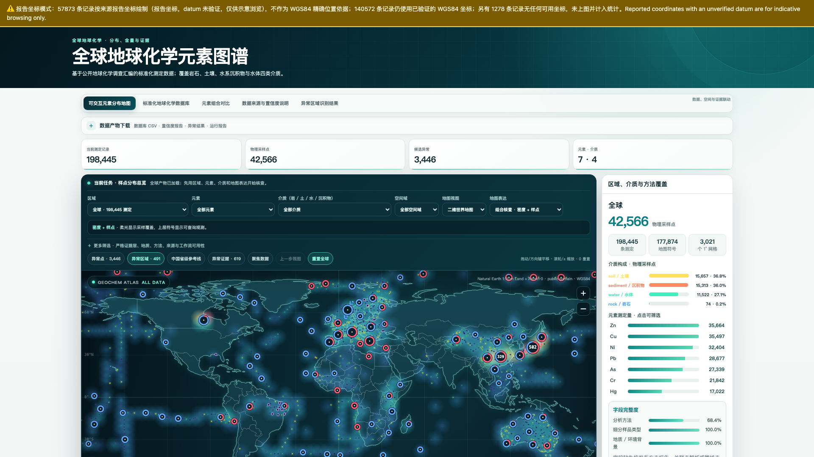

Global Geochemical Atlas
全球地球化学元素
分布图谱科研 Skill
AI Agent 全自动科研：从公开数据到成稿论文
36 个公开来源 · 199,723 条标准化测定 · 世界 / 中国 / 欧洲图谱已交付 · 5 篇论文成稿
🔗证据可回溯记录级来源 · SHA-256 哈希链
live/world-atlas.html · 自包含单文件 · 断网可用

📡多源采集36 SOURCES
›
🧪标准化mg/kg · WGS84
›
🔁质控修复ITERATION LOOP
›
📍异常识别ROBUST-Z · FDR
›
⏳时序归因GEOGENIC / INPUT
›
📄成稿论文5 PAPERS · 46 PAGES
多源标准化 + 确定性门禁 + 修复 Loop = 可信的全球元素图谱与论文